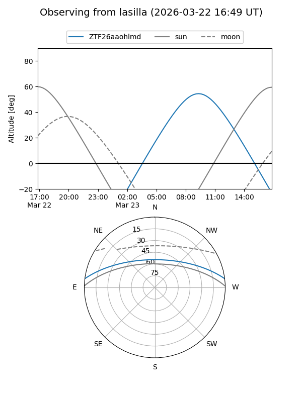
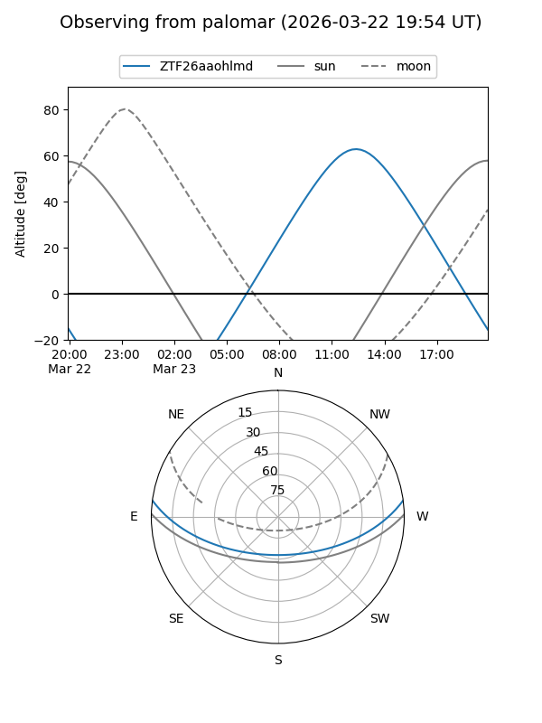

ZTF26aaohlmd
Target ZTF26aaohlmd at 2026-03-23 14:14
Aliases and brokers:
FINK: link
Lasair: link
ALeRCE: link
alt names
ZTF26aaohlmd (ztf,fink_ztf)
Coordinates:
equatorial (ra, dec) = 249.4664,+6.31052
equatorial (HMS+DMS) = 16:37:51.95,+06:18:37.87
galactic (l, b) = (22.5779,+32.47852)
Flags:
Photometry:
last ztfg=18.97
1 ztfg detections
Lightcurve
Visibility


Additional plots